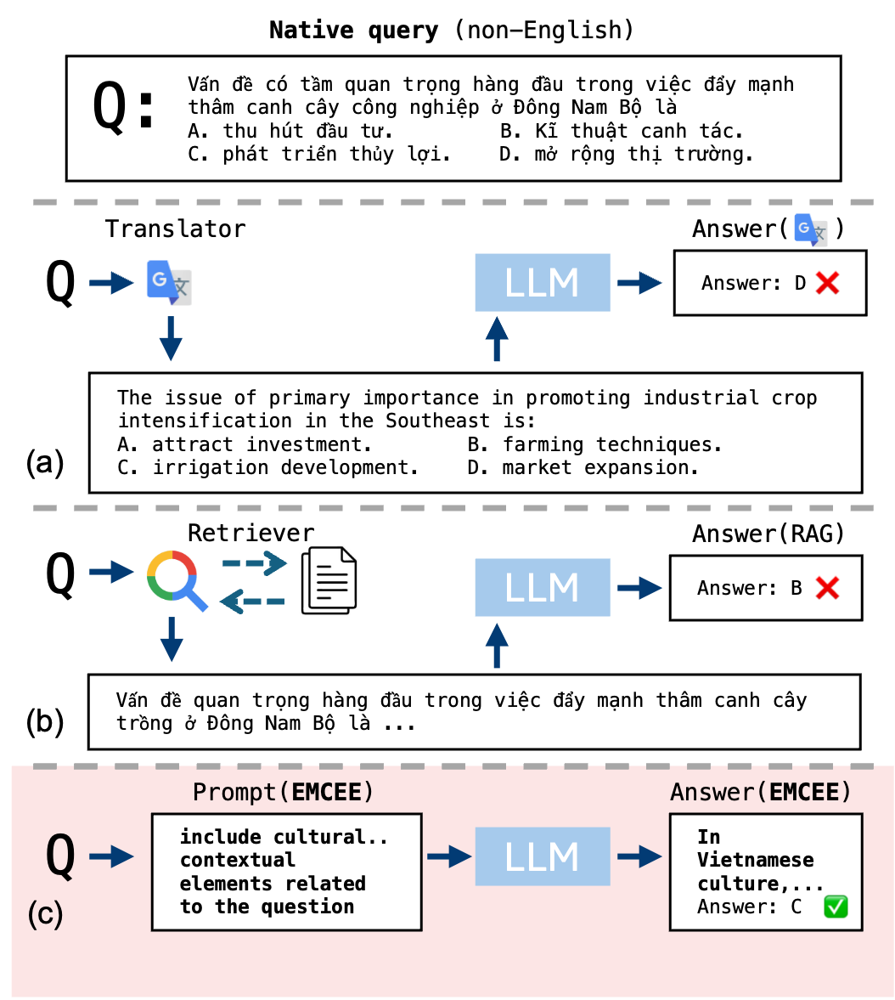
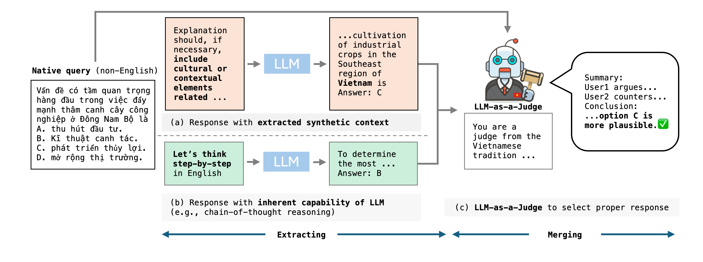

ACL 2026
A prompting framework that surfaces language-specific knowledge from an LLM, pairs it with reasoning, and uses a judge to choose the better path for each multilingual query.

Large Language Models (LLMs) have achieved impressive progress across a wide range of tasks, yet their heavy reliance on English-centric training data leads to significant performance degradation in non-English languages. While existing multilingual prompting methods emphasize reformulating queries into English or enhancing reasoning capabilities, they often fail to incorporate the language- and culture-specific grounding that is essential for some queries.
To address this limitation, we propose EMCEE (Extracting synthetic Multilingual Context and merging), a simple yet effective framework that enhances the multilingual capabilities of LLMs by explicitly extracting and utilizing query-relevant knowledge from the LLM itself. In particular, EMCEE first extracts synthetic context to uncover latent, language-specific knowledge encoded within the LLM, and then dynamically merges this contextual insight with reasoning-oriented outputs through a judgment-based selection mechanism. Extensive experiments on four multilingual benchmarks covering diverse languages and tasks demonstrate that EMCEE consistently outperforms prior approaches, achieving an average relative improvement of 16.4% overall and 31.7% in low-resource languages.
Mathematics and science questions often benefit from English chain-of-thought, but social science, language, and culture-specific questions need local grounding.
Reformulating a native query in English can make the model more fluent while losing the cultural cues needed to select the correct answer.
EMCEE instead asks the model to surface useful latent knowledge as synthetic context, avoiding dependence on an external retriever or database.

The LLM is prompted to write concise background knowledge for the native query, including cultural or contextual elements when useful.
In parallel, the model answers with a reasoning-oriented prompt, preserving the strengths of English chain-of-thought style prompting.
An LLM-as-a-Judge compares both responses with awareness of the target language background and chooses the more plausible final answer.
Main GPT-4o-mini results across multilingual benchmarks. Accuracy: M3-Exam, XNLI, XCOPA; F1: MKQA.
| Method | M3-Exam | MKQA | XNLI | XCOPA | ||||||||
|---|---|---|---|---|---|---|---|---|---|---|---|---|
| All | High | Low | All | High | Low | All | High | Low | All | High | Low | |
| NATIVE-BASIC | 65.2 | 72.7 | 57.7 | 44.1 | 48.6 | 38.5 | 66.2 | 74.0 | 58.4 | 79.3 | 94.2 | 61.4 |
| ENG-BASIC | 64.5 | 72.7 | 56.4 | 48.1 | 49.8 | 46.0 | 71.4 | 74.6 | 68.1 | 55.3 | 57.3 | 52.8 |
| TRANS-GOOGLE | 59.9 | 70.1 | 49.8 | 50.3 | 50.4 | 50.2 | 70.5 | 73.4 | 67.6 | 66.0 | 65.2 | 67.3 |
| XLT | 70.4 | 76.9 | 63.8 | 51.1 | 50.9 | 51.5 | 72.6 | 74.3 | 71.0 | 91.1 | 95.8 | 85.4 |
| NATIVE-COT | 70.4 | 76.5 | 64.4 | 45.5 | 49.2 | 40.9 | 68.4 | 70.1 | 66.6 | 90.0 | 96.3 | 82.4 |
| ENG-COT | 74.6 | 81.8 | 67.3 | 49.4 | 49.5 | 49.3 | 73.2 | 73.7 | 72.7 | 90.5 | 96.0 | 83.8 |
| RAG (NATIVE) | 68.7 | 80.4 | 57.0 | 42.5 | 45.3 | 39.0 | 67.4 | 69.9 | 64.9 | 83.6 | 92.3 | 73.2 |
| RAG (ENG) | 72.1 | 84.0 | 63.9 | 44.7 | 44.9 | 44.5 | 70.4 | 71.1 | 69.7 | 87.9 | 94.0 | 80.6 |
| EMCEE (ROUTE) | 76.2 | 83.1 | 69.2 | 50.8 | 51.6 | 49.8 | 73.1 | 73.9 | 72.3 | 90.5 | 96.0 | 83.8 |
| EMCEE (Ours) | 77.4 | 83.3 | 71.5 | 52.3 | 52.2 | 52.4 | 74.3 | 74.7 | 73.9 | 92.0 | 96.8 | 86.2 |
EMCEE achieves the highest low-resource score on all four benchmarks: 71.5 on M3-Exam, 52.4 on MKQA, 73.9 on XNLI, and 86.2 on XCOPA.
Across the All columns, EMCEE is best on every dataset, reaching 77.4 on M3-Exam, 52.3 on MKQA, 74.3 on XNLI, and 92.0 on XCOPA.
Compared with EMCEE (ROUTE), the full EMCEE method improves every All and Low column, showing that judging both candidate responses is more reliable.
Beyond the main benchmark table, EMCEE is evaluated through component ablations, model compatibility tests, cultural-alignment QA, stronger LLMs, and reasoning-model settings.
Each EMCEE component contributes: chain-of-thought reasoning, extracted synthetic context, and judge-based merging together produce the best low-resource performance.
| Method | CoT | ExT | MeR | All | High | Low |
|---|---|---|---|---|---|---|
| NATIVE-BASIC | - | - | - | 65.2 | 72.7 | 57.7 |
| ENG-COT | ✓ | - | - | 74.6 | 81.8 | 67.3 |
| Extract only | - | ✓ | - | 74.7 | 82.0 | 67.5 |
| CoT + Merge | ✓ | - | ✓ | 75.2 | 83.4 | 67.1 |
| EMCEE | ✓ | ✓ | ✓ | 77.4 | 83.3 | 71.5 |
EMCEE remains effective across GPT-4o, Claude-3.5-Haiku, and Llama-3.1-8B on M3-Exam.
| Method | GPT-4o | Claude-Haiku | Llama-3.1-8B |
|---|---|---|---|
| NATIVE-BASIC | 78.1 | 67.4 | 49.8 |
| TRANS-GOOGLE | 68.4 | 60.1 | 53.9 |
| XLT | 81.8 | 74.0 | 25.8 |
| NATIVE-COT | 83.9 | 74.8 | 36.8 |
| ENG-COT | 82.4 | 75.4 | 40.4 |
| EMCEE | 85.7 | 75.6 | 56.9 |
On GlobalOpinionQA, EMCEE improves low-resource country alignment while staying competitive overall.
| Method | All | High | Low |
|---|---|---|---|
| NATIVE-BASIC | 65.3 | 76.8 | 53.7 |
| ENG-BASIC | 68.6 | 78.9 | 58.3 |
| TRANS-GOOGLE | 68.5 | 79.7 | 57.4 |
| XLT | 55.2 | 66.0 | 44.5 |
| NATIVE-COT | 63.2 | 73.9 | 52.4 |
| ENG-COT | 65.4 | 74.9 | 53.9 |
| EMCEE | 69.0 | 77.6 | 60.4 |
EMCEE generalizes to stronger models on a sampled M3-Exam setting, leading GPT-5 and matching the best Claude-4-Sonnet result.
| Method | GPT-5 | Claude-4-Sonnet | ||||
|---|---|---|---|---|---|---|
| All | High | Low | All | High | Low | |
| NATIVE-BASIC | 74.3 | 83.8 | 64.8 | 79.3 | 90.0 | 68.5 |
| ENG-COT | 68.4 | 81.3 | 55.5 | 81.5 | 89.5 | 73.5 |
| XLT | 58.4 | 70.0 | 46.8 | 82.3 | 89.5 | 75.0 |
| EMCEE | 76.0 | 87.5 | 64.5 | 82.3 | 89.5 | 75.0 |
With Qwen3-8B, EMCEE improves both without and with think-mode, suggesting extraction adds value beyond implicit reasoning.
| Setting | Method | All | High | Low |
|---|---|---|---|---|
| w/o Think | NATIVE-BASIC | 37.8 | 44.6 | 31.0 |
| ENG-BASIC | 45.6 | 49.2 | 42.0 | |
| EMCEE | 67.3 | 80.0 | 54.7 | |
| w/ Think | NATIVE-BASIC | 49.5 | 67.1 | 31.8 |
| ENG-BASIC | 45.6 | 49.2 | 42.0 | |
| TRANS-GOOGLE | 49.3 | 65.4 | 33.1 | |
| EMCEE | 65.0 | 79.4 | 50.7 |
The implementation includes dataset loaders, baselines, EMCEE prompting strategies, evaluation utilities, and scripts for M3Exam, MKQA, XNLI, and XCOPA.
Open GitHubgit clone https://github.com/hamin2065/EMCEE.git
cd EMCEE
pip install -r requirements.txt
bash run_evaluation.sh M3Exam gpt merging@inproceedings{koo2026emcee,
title={EMCEE: Improving Multilingual Capability of LLMs via Bridging Knowledge and Reasoning with Extracted Synthetic Multilingual Context},
author={Koo, Hamin and Kim, Jaehyung},
booktitle={Proceedings of the 64th Annual Meeting of the Association for Computational Linguistics},
year={2026}
}